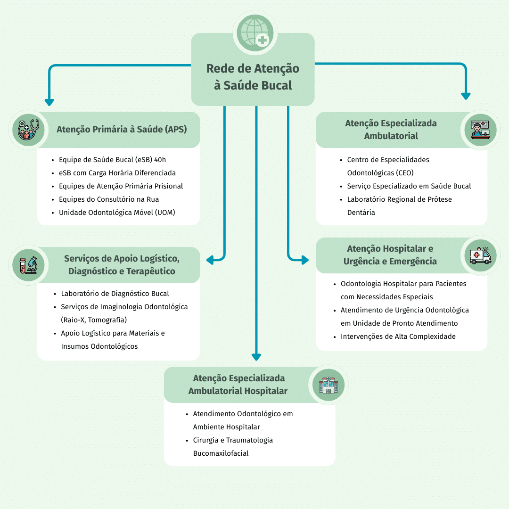
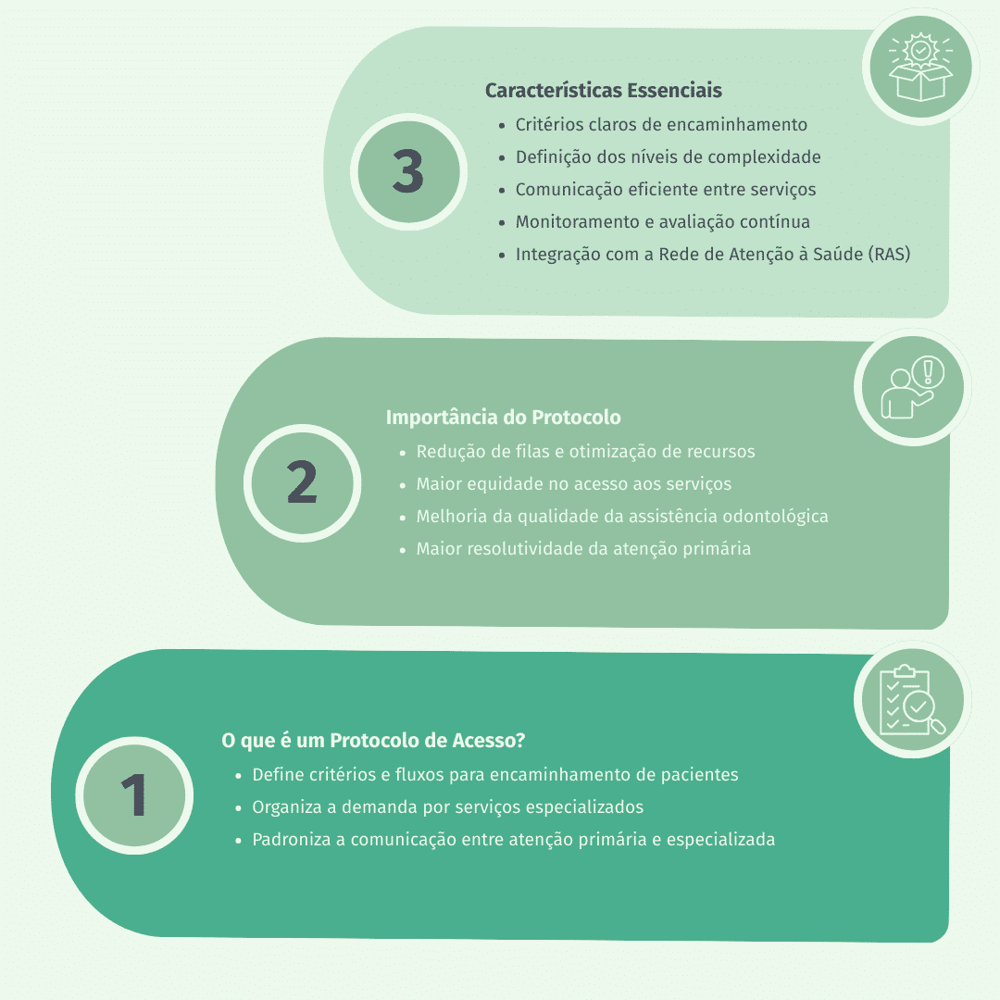

Apresentação da Unidade
Olá, estudante-trabalhador! Seja bem-vindo!
Nesta Unidade, vamos ampliar nosso olhar sobre a saúde bucal no sistema prisional, reconhecendo como os principais agravos em saúde bucal se manifestam nas doenças transmissíveis e não transmissíveis que afetam essa população e refletindo sobre estratégias de cuidado possíveis na realidade do ambiente prisional. Vamos discutir as manifestações orais de doenças transmissíveis e não transmissíveis, como diabetes, hipertensão, HIV, hepatites e transtornos mentais, além de compreender suas formas de tratamento e acompanhamento.
Também vamos abordar o funcionamento da Rede de Atenção à Saúde Bucal (RASB), destacando a importância dos fluxos de encaminhamento, do Cuidado Compartilhado e da Educação Permanente em Saúde. Mais do que tratar lesões ou sintomas, esta Unidade propõe enxergar a saúde bucal como parte da saúde integral, que deve ser acolhida e discutida em uma perspectiva multiprofissional.
Esperamos que, ao final do percurso, você esteja mais preparado para atuar de maneira integrada, responsável e humanizada, contribuindo para um cuidado mais efetivo à pessoa privada de liberdade (PPL). Vamos juntos?
Objetivos de Aprendizagem da Unidade
Conhecer os principais agravos e doenças bucais e possíveis ações de cuidado passíveis de implementação no sistema prisional;
Identificar as manifestações orais das principais doenças transmissíveis e não transmissíveis, suas formas de tratamento e acompanhamento terapêutico;
Compreender os fluxos de encaminhamento buscando a ampliação do acesso aos serviços de forma coordenada na Rede de Atenção à Saúde Bucal.
Carga Horária de Estudo: 5 horas
5.1 Principais agravos em saúde bucal e estratégias de cuidado no sistema prisional
Como discutido no Módulo 4, os agravos em saúde bucal são altamente prevalentes no ambiente prisional, muitas vezes associados a hábitos de vida e condições sanitárias precárias. O papel da equipe de Atenção Primária Prisional (eAPP) vai além da assistência curativa. Exige práticas integrativas e transversais que garantam acesso à saúde e acolhimento à população privada de liberdade. Mais do que diagnosticar doenças, é fundamental, compreendendo o cuidado em sua integralidade, analisar os fatores que contribuem para o adoecimento e reconhecer a complexidade das necessidades dessa população.
Entretanto, na prática, ainda enfrentamos desafios significativos. Levantamentos mostram alta incidência de cárie, necessidade crescente de próteses e relatos frequentes de dor nas PPL (Silva et al., 2022), evidenciando a predominância de atendimentos emergenciais e curativos, com pouca ênfase na prevenção e acompanhamento contínuo.
Para transformar essa realidade, é essencial adotar uma abordagem de promoção da saúde no ambiente prisional, no qual o consultório odontológico seja espaço de cuidado integral. Isso exige o comprometimento das eAPP e das equipes de segurança com planos de ação que integrem prevenção, demanda espontânea e atenção programada, alinhando-se às diretrizes da literatura e às reais necessidades da população privada de liberdade.
Agora que já discutimos como uma equipe de Saúde Bucal (eSB) inserida no sistema prisional deve atuar para oferecer cuidado em sua integralidade, precisamos direcionar nosso pensamento para a forma como iremos conduzir um paciente que tenha algum agravo em saúde bucal nesse ambiente diverso e com fluxos próprios. Vamos lá?
Clique para interagir
A cárie dentária é uma doença infecciosa que, na maioria dos casos, tem evolução lenta e, quando não tratada, pode avançar até comprometer completamente a estrutura dentária. Trata-se de um processo de desmineralização que depende da presença de microrganismos e tem manifestações progressivas. Em estágios iniciais, apresenta-se como manchas brancas opacas e rugosas no esmalte dos dentes (principalmente em região de acúmulo de alimento). Se não for tratada e o processo patológico continuar, pode causar a cavitação dentária. Segundo Manji e Fejerskov (1990), a cárie dentária é influenciada por fatores sociais, comportamentais e biológicos. A classe social, a renda e o nível de escolaridade são determinantes sociais que influenciam significativamente não apenas o acesso a informações, produtos e serviços odontológicos, mas também a percepção dos indivíduos sobre sua própria saúde bucal (Sousa et al., 2019; Lima et al., 2021).
A doença periodontal (DP), ou periodontite, é uma condição inflamatória crônica, silenciosa e subdiagnosticada, que afeta grande parte da população privada de liberdade, agravada pela dificuldade de acesso à higiene oral adequada, fio dental e atendimento odontológico contínuo. Causada por uma resposta exacerbada do organismo a fatores como higiene precária e predisposição genética, a DP provoca a destruição dos tecidos de suporte dos dentes, levando à perda óssea e, eventualmente, à perda dentária (Steffens; Marcantonio, 2018). Sendo a sexta doença mais prevalente no mundo, suas consequências extrapolam a saúde bucal, comprometendo a mastigação, causando dor e desconforto e afetando a autoestima, especialmente em um ambiente prisional já marcado por tensões físicas e emocionais. O diagnóstico é feito por meio da medição da perda de inserção clínica (PIC) com sonda periodontal, e, sem intervenções precoces, o desfecho pode ser a exodontia, tornando essencial a atuação sensível e proativa dos profissionais de saúde.
Considera-se câncer de boca o conjunto
de neoplasias malignas que acometem os
lábios e
as estruturas internas da
cavidade oral, incluindo gengivas,
mucosa jugal, palato duro, língua e
assoalho bucal
(Ulinski et al., 2021).
A população privada de liberdade
apresenta um perfil epidemiológico
preocupante em
relação a essas neoplasias, com
incidência significativa de carcinomas
da cavidade oral e da faringe (Mathew et
al.,
2005), associado a uma elevada
exposição a fatores de risco,
especialmente tabagismo e consumo de
álcool
(Martínez-Díaz-Canel; Martín-Fernández;
García-González, 2024). O aumento da
população privada de liberdade, aliado à
persistência desses comportamentos de
risco, pode contribuir para a elevação
dos casos oncológicos, configurando um
cenário
que exige atenção especial das
políticas públicas de saúde, tanto pela
gravidade quanto pela vulnerabilidade
social
envolvida.
Você já ouviu aquela frase: “o dentista pode nunca ter visto um câncer, mas com certeza um câncer já o viu”? Ela nos faz pensar, não é? E tem um fundo de verdade. O câncer de boca é um problema de saúde pública no mundo inteiro, especialmente em países em desenvolvimento, em que acontecem a maioria dos casos. No Brasil, por exemplo, o Instituto Nacional do Câncer (INCA) estimou que haveria cerca de 15 mil novos casos de câncer de boca entre 2023 e 2025 (Instituto Nacional do Câncer, 2022). No entanto, o grande desafio não é só o número de casos; muitas vezes, o diagnóstico do câncer de boca ocorre tardiamente, devido à demora no acesso ao serviço de saúde. Quando o paciente finalmente recebe atendimento, a doença frequentemente já se encontra em estágio avançado, dificultando o tratamento e reduzindo as chances de sucesso terapêutico (Santos; Batista; Cangussu, 2010). Isso nos leva a refletir: será que estamos realmente preparados para identificar precocemente esses casos? Os fluxos de atendimento facilitam o acesso à informação, ao diagnóstico rápido e ao tratamento adequado? São questões fundamentais não apenas para as eAPP, mas também para os policiais penais, que compartilham o cotidiano institucional e desempenham papel relevante na promoção de um ambiente que favoreça o cuidado e a prevenção em saúde.
Você sabia que um dos passos mais importantes para diagnosticar o câncer de boca é uma boa anamnese, aliada a um exame clínico completo da cavidade bucal? É nessa primeira abordagem que identificamos fatores de risco e possíveis lesões suspeitas, que depois serão confirmadas com biópsia e exame anatomopatológico. O Ministério da Saúde (Brasil, 2023) orienta que esses exames preventivos façam parte da rotina dos atendimentos odontológicos, aproveitando também momentos como campanhas de vacinação para observar sinais de alerta. Além disso, acompanhar de perto os casos suspeitos e acionar serviços de referência quando necessário é fundamental. Parcerias com universidades e outras instituições também podem ajudar muito, fortalecendo a prevenção, o diagnóstico precoce, o tratamento e a reabilitação dos pacientes.
5.1.4 Ações de cuidado relacionadas aos agravos em saúde bucal no sistema prisional
A Política Nacional de Saúde Bucal, instituída pela Lei nº 14.572, de 8 de maio de 2023, orienta as ações de prevenção, diagnóstico e recuperação dos agravos em saúde bucal. Para aplicá-las no contexto prisional, o primeiro passo é conhecer o perfil epidemiológico da população privada de liberdade, considerando não só as doenças mais comuns, mas também seus hábitos e necessidades, percebidas ou não (Brasil, 2023). Por isso, é fundamental realizar um levantamento epidemiológico de 100% da população privada de liberdade. Esses dados ajudam a identificar os principais problemas, organizar os fluxos de atendimento e planejar encaminhamentos de forma eficaz. Esse levantamento pode tanto ser feito com a população já residente quanto ser incorporado à admissão de novas PPL como procedimento essencial. Depois de conhecer bem o cenário, as próximas ações farão muito mais sentido. Vamos começar?
Reflexão
Você acha difícil implementar ações de melhoria na saúde do estabelecimento penal em que trabalha? Para refletir sobre esse desafio, recomendamos a leitura de um artigo que relata uma experiência de promoção da saúde no regime semiaberto do sistema prisional, destacando as ações de saúde realizadas e os desafios enfrentados no contexto prisional. A pesquisa discute como estratégias de promoção da saúde podem ser aplicadas para melhorar as condições de saúde dessa população, levando em consideração as especificidades do ambiente prisional.
Clique para interagir
Incluem intervenções educativas e preventivas da Política Nacional de Promoção da Saúde (PNPS) (Brasil, 2018), tanto individuais quanto coletivas. As principais ações são: Educação em Saúde, Fluoretação das Águas, Escovação Supervisionada e Aplicação de Flúor Tópico. Buscam promover autonomia e reflexão sobre o processo saúde-doença, incentivando a procura precoce pelos serviços de saúde, o que facilita o tratamento.
Envolvem diagnóstico e tratamento. O atendimento integral permite identificar lesões precocemente e priorizar tratamentos conservadores, evitando mutilações. Para isso, é essencial: insumos disponíveis, equipamentos funcionando, equipe organizada e apoio da segurança na agenda de atendimentos.
Visam recuperar funções perdidas e promover a reintegração social e profissional. No sistema prisional, o acesso a esses serviços é limitado, pois dependem de centros especializados fora da Atenção Primária à Saúde (APS). Por isso, além de focar na prevenção, é necessário criar protocolos que garantam o estabelecimento penal como unidade de saúde regulamentada e integrada à rede de atenção. Em breve, discutiremos como elaborar esses protocolos e a importância de atuar em equipe para alcançar melhores resultados, com responsabilidade e registro na documentação do paciente.
5.2 Principais manifestações orais em doenças sistêmicas e estratégias de cuidado
Ao avaliarmos um paciente, é essencial que possamos identificar as necessidades em saúde que ele apresenta. Afinal, faz parte no nosso plano de tratamento a realização de uma anamnese aprofundada, capaz de detectar doenças que se manifestem primeiro em mucosa oral, não é mesmo? Voltando nosso olhar para a realidade da PPL, existem lesões a que precisamos nos atentar no momento do exame clínico, principalmente pela maior incidência de casos nesse contexto.
5.2.1 Doenças transmissíveis
As doenças transmissíveis constituem um importante desafio para a saúde pública, especialmente em contextos de maior vulnerabilidade social, como o sistema prisional. A população privada de liberdade apresenta fatores de risco específicos que favorecem a disseminação de infecções, entre eles a superlotação, o acesso restrito a serviços de saúde e a escassez de informação qualificada. Segundo Carvalho et al. (2020), a população privada de liberdade apresenta dificuldades de identificação, prevenção, tratamento e formas de transmissão de algumas infecções, além de não reconhecer, de maneira adequada, as estratégias de prevenção.
Nesse contexto, torna-se fundamental a abordagem das lesões orais relacionadas a doenças transmissíveis, uma vez que a cavidade bucal pode ser local de manifestação clínica e importante indicador do estado geral de saúde. O Quadro 1 apresenta as principais doenças transmissíveis, suas formas de apresentação em cavidade oral e orientações sobre o manejo adequado, reforçando a necessidade de atuação interdisciplinar entre a odontologia e demais áreas da saúde.
Quadro 1 - Principais doenças transmissíveis e suas manifestações orais
Clique para interagir
Forma de
Apresentação:
Candidíase oral,
leucoplasia pilosa,
úlceras herpéticas,
sarcoma de Kaposi.
Como manejar:
Relacionar as lesões ao
número de células CD4+ e
à carga viral (CV), de
forma
interdisciplinar com
equipe e
infectologista.
Forma de
Apresentação:
Úlceras indolores com
bordas irregulares e
esbranquiçadas (cancro
duro), placas
mucosas, lesões
granulomatosas (goma),
glossite intersticial.
Como manejar:
Identificar sífilis
primária, secundária ou
terciária pelas
características da
lesão, associado a
exames sorológicos
(teste rápido e/ou VDRL)
para diagnóstico e forma
interdisciplinar com
equipe e
infectologista.
Forma de
Apresentação:
Úlceras crônicas, dolorosas, geralmente na língua. Na análise histológica,
percebe-se inflamações crônicas granulomatosas.
Como manejar:
Orienta-se a biópsia incisional para exame anatomopatológico de forma
concomitante
com o exame de baciloscopia.
Forma de
Apresentação:
Petéquias, gengivite, líquen plano e síndrome de Sjögren (alteração salivar).
Como manejar:
Relacionar as lesões com sintomatologia prévia, uma vez que as lesões
extra-hepáticas tendem a aparecer após
comprometimento do fígado. Compartilhamento com equipe para possível tratamento
com
antiviral.
Forma de
Apresentação:
Vesículas dolorosas, úlceras labiais e intraorais.
Como manejar:
Manejo odontológico para aplicação tópica de aciclovir. Em casos mais graves ou
recorrentes de herpes labial, o
cirurgião-dentista pode prescrever comprimidos de aciclovir para uso oral.
5.2.2 Doenças crônicas não transmissíveis
No contexto do sistema prisional, as doenças crônicas não transmissíveis (DCNTs) se impõem como um desafio complexo à promoção da saúde bucal. Será que estamos, de fato, atentos às repercussões dessas doenças na cavidade oral? Muitas dessas condições, embora amplamente conhecidas, ainda são subdiagnosticadas ou mesmo negligenciadas nesse ambiente, em que o acesso à saúde é frequentemente limitado e as prioridades clínicas nem sempre incluem a avaliação bucal. Buscando compreender melhor esse cenário, iremos analisar alguns agravos comuns à população privada de liberdade:
Clique para interagir
A DM é uma doença associada a manifestações como xerostomia, infecções fúngicas recorrentes, doença periodontal severa e comprometimento na cicatrização (Taveras et al., 2025). É importante que, ao avaliarmos o paciente, nos questionemos se essas alterações podem ser reconhecidas como sinais de um descontrole glicêmico. Será que os profissionais de saúde bucal que atuam em instituições penais estão capacitados para identificar esses indícios precocemente e agir de forma integrada com a eAPP?
A HAS não costuma provocar sintomas orais diretamente, mas seu tratamento pode ocasionar um quadro comum de hiperplasia gengival medicamentosa devido ao uso contínuo de medicamentos como os bloqueadores dos canais de cálcio, por isso é tão importante que o cirurgião-dentista esteja atento ao histórico médico do paciente, podendo intervir quando identificar essa condição (Kumar et al., 2012).
O uso contínuo de psicotrópicos, comum entre PPL devido ao sofrimento psíquico agravado pelo isolamento, também pode causar alterações bucais, como bruxismo, xerostomia, cáries extensas e lesões autoinduzidas, exigindo suporte adequado para manutenção da saúde bucal. Além disso, o uso abusivo de álcool, tabaco e drogas ilícitas, frequente no ambiente prisional, eleva o risco de ocorrência de doenças periodontais e lesões orais potencialmente malignas, como leucoplasias e eritroplasias, além de aumentar o número de casos de hepatites não virais (Rodrigues; Souza, 2021), reforçando a necessidade de ações preventivas e de cuidado integral.
5.3 Fluxos de encaminhamento e ampliação do acesso na Rede de Atenção à Saúde Bucal
A assistência odontológica no Sistema Único de Saúde (SUS) ainda enfrenta muitos desafios, não é? Percebe-se que o acesso é muito fragmentado. Falta continuidade no cuidado e há uma grande dificuldade de comunicação entre os diferentes serviços de saúde. Isso acaba dificultando muito a implementação de ações preventivas e o cuidado que realmente foca nas necessidades do paciente, como a clínica ampliada.
Entretanto, um conceito que pode ajudar a superar essas barreiras é o de Redes de Atenção à Saúde (RAS), proposto por Eugênio Vilaça Mendes em 2010. Ele defende que os serviços de saúde precisam estar mais conectados e trabalhar de forma integrada, não isolada. No caso da saúde bucal, a Rede de Atenção à Saúde Bucal (RASB), criada pela Portaria nº 6.213, de 19 de dezembro de 2024, busca exatamente isto: fazer com que todos os serviços de saúde bucal trabalhem juntos, com diretrizes e objetivos bem definidos, garantindo um cuidado mais contínuo, coordenado e de qualidade para a população (Brasil, 2024). Na Figura 1, apresentamos os fluxos envolvidos na consolidação da RASB.
Figura 1 - Fluxograma da Rede de Atenção à Saúde Bucal

Fonte: Brasil (2024).Para que a RASB realmente funcione, ela precisa integrar todos os níveis de atenção de forma coesa, e isso também se aplica às PPL. A Política Nacional de Atenção Integral à Saúde das Pessoas Privadas de Liberdade no Sistema Prisional (PNAISP), instituída pela Portaria Interministerial nº 1, de 2 de janeiro de 2014, trouxe um grande avanço ao reconhecer os serviços de saúde no sistema prisional como parte da RAS. Isso significa que os serviços de saúde nas instituições penais não estão isolados, mas integrados ao sistema, garantindo que a população privada de liberdade tenha acesso ao cuidado integral (Brasil, 2014).
Com isso, a PNAISP assegura a presença da APS nos estabelecimentos penais, buscando garantir que os cuidados sejam contínuos e de qualidade. A questão é que, para a saúde bucal funcionar de maneira adequada, não basta apenas tratar a dor, sendo necessário um cuidado completo e contínuo. Porém, como o sistema prisional tem suas limitações estruturais, o acesso à saúde é difícil, o que afeta diretamente as condições de saúde bucal das PPL. Por isso, é fundamental adotar práticas baseadas no Cuidado Compartilhado e na Educação Permanente em Saúde, eixos norteadores para a prática interdisciplinar e corresponsável. O Cuidado Compartilhado envolve a colaboração de profissionais de diferentes áreas, criando um cuidado integrado. Já a Educação Permanente em Saúde permite que os profissionais de saúde reflitam sobre sua prática e se aperfeiçoem para enfrentar os desafios do contexto prisional. Vamos detalhar essas estratégias, pois são elas que farão a diferença no dia a dia.
5.3.1 Cuidado Compartilhado
Para garantir que o cuidado em saúde bucal seja integral e eficaz, é essencial que a comunicação entre os diferentes níveis de atenção à saúde funcione bem. A Carteira de Serviços da Atenção Primária à Saúde (Casaps) orienta a execução de múltiplas ações pelas eSB no âmbito das instituições penais, contemplando práticas de promoção e prevenção de agravos em saúde bucal, bem como a realização de procedimentos clínicos de diferentes níveis de complexidade. Porém, a população privada de liberdade apresenta uma demanda odontológica mais complexa do que a da população em geral, incluindo tratamentos especializados para doenças da mucosa oral, bem como procedimentos endodônticos e periodontais, que extrapolam a responsabilidade exclusiva da APS (Reddy et al., 2012).
Por isso, é fundamental que haja compartilhamento do cuidado em saúde entre os diferentes níveis de atendimento da RASB, com as eAPP coordenando esses fluxos. Para que o cuidado à população privada de liberdade seja eficiente e contínuo, é fundamental que a gestão desenvolva a estrutura de um protocolo de acesso eficaz (Figura 2). Isso implica mapear detalhadamente os fluxos de encaminhamento, definir critérios claros de prioridade para diferentes tipos de atendimento, estabelecer as responsabilidades de cada serviço e profissional e assegurar a interoperabilidade dos sistemas de registro de informações com o SUS, garantindo que todos os dados do paciente estejam acessíveis em qualquer ponto da RASB. O protocolo deve ainda prever mecanismos de monitoramento e avaliação contínua, promovendo ajustes sempre que necessário. Com essa estrutura organizada, os profissionais da APS podem conhecer os fluxos, atuar em sintonia com os demais serviços e assegurar um cuidado coordenado, contínuo e sem falhas.
Figura 2 - Estrutura de um protocolo de acesso eficaz

Fonte: Melo et al. (2021).O Cuidado Compartilhado deve ser realizado por meio de sistemas de registro de informação e regulação. Esses sistemas são fundamentais para melhorar a gestão, o controle e a eficiência dos serviços de saúde no Brasil, para que seja possível ofertar o acesso adequado aos serviços oferecidos pelo SUS para a população, incluindo a privada de liberdade. São alguns exemplos de plataformas de regulação utilizadas no SUS, com variações de uso, como região, os contidos no Quadro 2.
Quadro 2 - Plataformas de regulação do acesso no Sistema Único de Saúde
O CORE (Complexo Regulador Estadual) é uma estrutura que gere e regula o acesso aos serviços de saúde sob gestão estadual e é gerido pela Secretaria de Estado da Saúde.
5.3.2 Educação Permanente em Saúde
O sistema prisional enfrenta uma série de desafios sanitários, incluindo a falta de higiene bucal adequada, o que pode agravar casos de lesões orais e demandar encaminhamentos para tratamentos odontológicos mais complexos (Thetakala et al., 2018). Diante disso, é essencial que o cuidado seja compartilhado de forma eficaz, levando em consideração as particularidades do ambiente prisional. A comunicação entre os profissionais de saúde, segurança e outros envolvidos é fundamental para garantir a continuidade do cuidado, que deve ser regular e programado, incluindo o acesso a serviços de maior complexidade quando necessário.
Os profissionais responsáveis pelos registros e transporte dos pacientes devem entender que o atendimento odontológico no sistema prisional deve ser contínuo, com a garantia de vagas em serviços especializados, conforme necessário. Além disso, fora do ambiente prisional, o sistema regulador de vagas deve assegurar que a população privada de liberdade tenha o mesmo acesso à saúde que a população em liberdade, contribuindo para uma coordenação eficiente na RASB e garantindo que o direito à saúde seja efetivado para todos, sem discriminação.
A capacitação das equipes de saúde e segurança que atuam no sistema prisional é essencial para garantir que o cuidado em saúde bucal aconteça de forma contínua e tenha qualidade. Como exposto na Figura 3, a Educação Permanente em Saúde tem um papel importante nesse processo, pois, além de treinar, propõe uma reflexão e a transformação das práticas cotidianas. No contexto prisional, ela contribui para desconstruir posturas rígidas e insensíveis, promovendo um atendimento mais acolhedor e humanizado. Com isso, a saúde bucal não apenas melhora, mas também fortalece o trabalho em equipe e assegura que o direito à saúde seja garantido de maneira organizada e respeitosa.
Figura 3 - Organização da Educação Permanente em saúde bucal
Fonte: Almeida et al. (2022).Capacitação para Atendimento Odontológico
Capacita equipes de saúde, segurança e gestão prisional;
Foca na importância da saúde bucal e no manejo de problemas odontológicos;
Integra profissionais de saúde e agentes penitenciários.
Objetivos da Capacitação
Preparar os profissionais para atendimento emergencial e preventivo;
Melhorar a comunicação entre os setores (saúde, segurança e gestão);
Reduzir tempo de espera por tratamentos odontológicos;
Garantir o direito à saúde bucal para pessoas privadas de liberdade.
Fluxo de Encaminhamento
Profissionais de saúde identificam a necessidade de tratamento odontológico;
Agentes penitenciários transportam pessoas privadas de liberdade até a unidade odontológica;
Complexo Regulatório regula vagas e organiza o atendimento.
Atendimento Odontológico
Realiza atendimentos de urgência e emergência odontológica;
Encaminha casos para Centros de Especialidades Odontológicas (CEO);
Segue protocolos claros para diagnósticos e tratamento.
Uso de Tecnologia
Teleodontologia: triagem e acompanhamento remoto;
Registro eletrônico para documentação do atendimento e acompanhamento.
Benefícios Esperados
Redução do tempo de espera para atendimento;
Maior integração e comunicação entre as equipes;
Melhoria na qualidade do atendimento odontológico;
Garantia de um atendimento mais eficiente e resolutivo.
Avaliação e Monitoramento
Acompanhamento contínuo dos resultados da capacitação;
Análise de impacto na redução do tempo de resposta e fila de espera;
Ajustes nos processos conforme necessidade.
Caso Clínico
Antônio, homem, 58 anos, branco, diabético, pessoa privada de liberdade (PPL) é encaminhado à equipe de Saúde Bucal após acolhimento inicial realizado pela enfermagem, à qual relatou dor intensa na região posterior da boca, dificuldade para se alimentar e desconforto estético relacionado à perda dentária. A equipe de enfermagem sinalizou febre noturna, perda de peso recente e dificuldade na adesão à alimentação fornecida pela unidade. A psicologia apontou sinais de isolamento social e sofrimento emocional, possivelmente agravados pela condição bucal. A equipe médica, por sua vez, está em investigação do controle glicêmico, com histórico de glicemia elevada. Ao exame clínico odontológico, foram identificadas diversas raízes radiculares residuais em maxila e mandíbula, amplos espaços edêntulos, infecção local com abscesso com fístula, mobilidade severa dos dentes remanescentes e presença de manchas leucoplásicas em mucosa jugal, sendo estas últimas sugestivas de lesões potencialmente malignas. A condição bucal compromete a mastigação, a estética, o estado nutricional e o bem-estar psicossocial do paciente.
Pergunta: Qual conduta a equipe deve adotar para o manejo inicial do caso de Antônio?
Encerramento da Unidade
Chegamos ao fim desta Unidade. Foi enriquecedor compartilhar esse caminho com você. Ao longo do percurso, vimos como é essencial compreender barreiras e facilitadores ligados à atenção à saúde bucal no sistema prisional para garantir um cuidado adequado e prevenir complicações que afetam diretamente a qualidade de vida das PPL.
Como profissionais de saúde, sejamos ou não cirurgiões-dentistas, refletir sobre isso nos ajuda a enxergar além dos muros e entender a importância de um atendimento contínuo, humano e resolutivo. Sabemos que os desafios são muitos, desde a limitação no acesso aos serviços até as dificuldades estruturais e operacionais do próprio sistema prisional. Por isso, pensar em estratégias que envolvam a prevenção, a identificação precoce e o tratamento adequado de doenças e agravos em saúde bucal e a articulação entre os diferentes níveis de atenção é indispensável, e, enquanto responsáveis pela promoção da saúde no sistema prisional, precisamos demonstrar essa importância aos tomadores de decisão. Isso só é possível com um trabalho em rede, em que profissionais de saúde e segurança atuem de forma integrada e coordenada.
Também discutimos como o fortalecimento da APS, o uso de tecnologias e o entendimento claro dos fluxos de encaminhamento na RASB podem melhorar significativamente o cuidado ofertado. Essas ações, quando bem articuladas, reduzem desigualdades e ajudam a consolidar o direito à saúde bucal como parte do direito à saúde integral, mesmo em um contexto tão complexo quanto o prisional. A saúde bucal é parte indissociável da saúde integral.
Seu compromisso diário pode transformar vidas invisibilizadas e reafirmar o direito de todos ao cuidado digno e humanizado. Esperamos que este conteúdo tenha não só contribuído para o seu aprendizado técnico, como também provocado uma reflexão mais profunda sobre o papel de cada profissional na construção de um cuidado mais justo e humano. Que esse conhecimento te acompanhe e inspire futuras práticas que promovam dignidade e equidade. Foi um prazer trilhar esse caminho com você!
Podcast
Após estudar esse módulo, você pode revisar o conteúdo escutando o nosso podcast. É um bate-papo informal com os principais pontos do conteúdo estudado.
Ver transcriçãoParabéns por concluir essa unidade! Clique no botão "retornar" no canto superior esquerdo para continuar os seus estudos.
Referências principais
BRASIL. Ministério da Saúde. Portaria GM/MS nº 6.213, de 19 de dezembro de 2024. Altera a Portaria de Consolidação GM/MS nº 3, de 28 de setembro de 2017, para instituir a Rede de Atenção à Saúde Bucal - RASB na Política Nacional de Saúde Bucal - PNSB, no âmbito do Sistema Único de Saúde - SUS. Diário Oficial da União, Brasília, DF, 19 dez. 2024. Disponível em: https://bvsms.saude.gov.br/bvs/saudelegis/gm/2024/prt6213_20_12_2024.html . Acesso em: 20 ago. 2025.
BRASIL. Lei nº 14.572, de 8 de maio de 2023. Institui a Política Nacional de Saúde Bucal no âmbito do Sistema Único de Saúde (SUS) e altera a Lei nº 8.080, de 19 de setembro de 1990, para incluir a saúde bucal no campo de atuação do SUS. Diário Oficial da União, Brasília, DF, 9 maio 2023. Disponível em: https://www.planalto.gov.br/ccivil_03/_ato2023-2026/2023/lei/l14572.htm . Acesso em: 20 ago. 2025.
SERRA, A. E. G.; LIMA, R. C. R. O. Promoção da saúde para pessoas no regime semiaberto do sistema penitenciário: relato de experiência. Saúde em Debate, v. 43, n. 123, p. 1270-1281, 2019. Disponível em: https://www.scielo.br/j/sdeb/a/kFW8VvLpwfnXFKsnCMrVCFz/?lang=pt . Acesso em: 20 ago. 2025.
SILVA, C. B. et al. Condições bucais de privados de liberdade em um município do sudoeste goiano. Brazilian Journal of Development, v. 8, n. 3, p. 17965-17978, 2022. Disponível em: https://ojs.brazilianjournals.com.br/ojs/index.php/BRJD/article/view/45110 . Acesso em: 20 ago. 2025.
Referências
ALMEIDA, J. R. S. et al. A Política Nacional de Educação Permanente em Saúde e sua relação com a odontologia. Cadernos de Saúde Coletiva, v. 30, n. 4, p. 507-516, 2022. Disponível em: https://www.scielo.br/j/cadsc/a/bJLyFCNYtDb5vJTM75MxVcJ/?lang=pt . Acesso em: 25 set. 2025.
BRASIL. Ministério da Saúde. Secretaria de Vigilância em Saúde. Secretaria de Atenção à Saúde. Política Nacional de Promoção da Saúde (PNPS). Brasília: Ministério da Saúde, 2018. Disponível em: https://bvsms.saude.gov.br/bvs/publicacoes/politica_nacional_promocao_saude.pdf . Acesso em: 25 set. 2025.
BRASIL. Ministério da Saúde. Ministério da Justiça e Segurança Pública. Portaria Interministerial nº 1, de 2 de janeiro de 2014. Institui a Política Nacional de Atenção Integral à Saúde das Pessoas Privadas de Liberdade no Sistema Prisional (PNAISP) no âmbito do Sistema Único de Saúde (SUS). Diário Oficial da União, Brasília, DF, 3 jan. 2014. Disponível em: https://bvsms.saude.gov.br/bvs/saudelegis/gm/2014/pri0001_02_01_2014.html . Acesso em: 20 ago. 2025.
BRASIL. Ministério da Saúde. Portaria GM/MS nº 1.559, de 1 de agosto de 2008. Institui a Política Nacional de Regulação do Sistema Único de Saúde - SUS. Diário Oficial da União, Brasília, DF, 4 ago. 2008. Disponível em: https://bvsms.saude.gov.br/bvs/saudelegis/gm/2008/prt1559_01_08_2008.html . Acesso em: 20 ago. 2025.
CARVALHO, F. F. et al. Conhecimento da população privada de liberdade sobre infecções sexualmente transmissíveis. Revista Gaúcha de Enfermagem, v. 41, e20190268, 2020. Disponível em: https://www.scielo.br/j/rgenf/a/sdJn8Vng4tRBmqJWrYxm3CL/?lang=pt . Acesso em: 25 set. 2025.
COSTA, S. M.; VASCONCELOS, M.; ABREU, M. H. N. G. Ciência & Saúde Coletiva, v. 18, n. 7, p. 1971-1980, 2013. Disponível em: https://www.scielo.br/j/csc/a/KcfwMf3GV9CWFN9ddWQHPYC/?format=html&lang=pt . Acesso em: 20 ago. 2025.
INSTITUTO NACIONAL DE CÂNCER (Brasil). Estimativa 2023: incidência de câncer no Brasil. Rio de Janeiro: INCA, 2022. Disponível em: https://www.inca.gov.br/publicacoes/livros/estimativa-2023-incidencia-de-cancer-no-brasil . Acesso em: 20 ago. 2025.
KUMAR, P. et al. Oral manifestations in hypertensive patients: a clinical study. Journal of Oral and Maxillofacial Pathology, v. 16, n. 2, p. 215-221, 2012. Disponível em: https://www.ncbi.nlm.nih.gov/pmc/articles/PMC3424937/ . Acesso em: 25 set. 2025.
LIMA, N. S. et al. Public health, racism and dentistry: Analysis of the treatment of the black prison population in the Unified Health System. Research, Society and Development, v. 10, n. 11, e433101119924, 2021. Disponível em: https://rsdjournal.org/index.php/rsd/article/view/19924 . Acesso em: 20 ago. 2025.
MANJI, F.; FEJERSKOV, O. Dental Caries in Developing Countries in Relation to the Appropriate Use of Fluoride. Journal of Dental Research, v. 69, n. 2, supl., p. 733-741, 1990.
MARTÍNEZ-DÍAZ-CANEL, A. I.; MARTÍN-FERNÁNDEZ, E.; GARCÍA-GONZÁLEZ, M. Oral care in the Spanish prison setting. Revista Espanola de Sanidad Penitenciaria, v. 26, n. 3, p. 113-120, 2024. Disponível em: https://www.sanipe.es/OJS/index.php/RESP/article/view/682/1340 . Acesso em: 20 ago. 2025.
MATHEW, P. et al. Cancer in an incarcerated population. Cancer, v. 104, n. 10, p. 2197-2204, 2005. Disponível em: https://pubmed.ncbi.nlm.nih.gov/16206295/ . Acesso em: 20 ago. 2025.
MATO GROSSO DO SUL. Diagnóstico da rede de atenção à saúde bucal e recomendações para a linha de cuidado do câncer de boca. Campo Grande: Ed. dos Autores, 2024a. Disponível em: https://docs.bvsalud.org/biblioref/2024/12/1580806/diagnostico-da-rede-de-atencao-a-saude-bucal-e-recomendacoes-p_OxHDs75.pdf . Acesso em: 20 ago. 2025.
MATO GROSSO DO SUL. Guia prático: diagnóstico de câncer bucal - passo-a-passo para cirurgiões dentistas. Campo Grande: Ed. dos Autores, 2024b. Disponível em: https://docs.bvsalud.org/biblioref/2024/12/1580663/guia-pratico-diagnostico-de-cancer-bucal-passo-a-passo-para-ci_0JL6NfI.pdf . Acesso em: 20 ago. 2025.
MELO, E. A. et al. A regulação do acesso à atenção especializada e a Atenção Primária à Saúde nas políticas nacionais do SUS. Physis: Revista de Saúde Coletiva, v. 31, n. 1, e310109, 2021. Disponível em: https://www.scielo.br/j/physis/a/86BXPhTn3CrBcZfDjBs33md/?lang=pt . Acesso em: 25 set. 2025.
MENDES, E. V. As redes de atenção à saúde. Ciência & Saúde Coletiva, v. 15, n. 5, p. 2297-2305, 2010. Disponível em: https://www.scielo.br/j/csc/a/VRzN6vF5MRYdKGMBYgksFwc/?lang=pt . Acesso em: 20 ago. 2025.
NEVILLE, B. Patologia Oral e Maxilofacial. Rio de Janeiro: GEN Guanabara Koogan, 2016.
REDDY, V. et al. A survey on oral health status and treatment needs of life-imprisoned inmates in central jails of Karnataka, India. International Dental Journal, v. 62, n. 1, p. 27-32, 2012. Disponível em: https://www.sciencedirect.com/science/article/pii/S0020653920332020?via%3Dihub . Acesso em: 20 ago. 2025.
RODRIGUES, D. S.; SOUZA, P. T. R. Lesões bucais associadas a hepatites: algumas delas seriam encontradas nas hepatites autoimunes? Revista Gestão e Saúde, v. 23, n. 1, p. 78-97, 2021. Disponível em: https://www.researchgate.net/publication/352820819_LESOES_BUCAIS_ASSOCIADAS_A_HEPATITES_ALGUMAS_DELAS_SERIAM_ENCONTRADAS_NAS_HEPATITES_AUTOIMUNES . Acesso em: 20 ago. 2025.
SANTOS, L. C. O.; BATISTA, O. M.; CANGUSSU, M. C. T. Caracterização do diagnóstico tardio do câncer de boca no estado de Alagoas. Brazilian Journal of Otorhinolaryngology, v. 76, n. 4, p. 416-422, 2010. Disponível em: https://www.scielo.br/j/bjorl/a/CdBpdKTbRWWgYrTjb7dyCNH/?lang=pt . Acesso em: 25 set. 2025.
SOUSA, J. L. et al. Posição socioeconômica e autoavaliação da saúde bucal no Brasil: resultados da Pesquisa Nacional de Saúde. Cadernos de Saúde Pública, v. 35, n. 6, e00099518, 2019. Disponível em: https://www.scielo.br/j/csp/a/J3GLgTCzghjCnwXydDcDRTv/abstract/?lang=pt . Acesso em: 20 ago. 2025.
STEFFENS, J. P.; MARCANTONIO, R. A. C. Classificação das Doenças e Condições Periodontais e Peri-implantares 2018: guia prático e pontos-chave. Revista de Odontologia da UNESP, v. 47, n. 4, p. 189-197, 2018. Disponível em: https://www.scielo.br/j/rounesp/a/F9F6gnVnNm6hFt6MBrJ6dHC/?format=pdf&lang=pt . Acesso em: 20 ago. 2025.
TAVERAS, I. D. L. et al. Manifestações orofaciais em pessoas com diabetes mellitus: revisão integrativa. Revista Observatorio de la Economía Latinoamericana, v. 23, n. 2, e8948, 2025. Disponível em: https://ojs.observatoriolatinoamericano.com/ojs/index.php/olel/article/view/8948 . Acesso em: 20 ago. 2025.
THETAKALA, R. K. et al. Bruxism and Oral Health-Related Quality of Life Among Male Inmates in a Penal Institution, Mysore: A Cross-Sectional Study. Indian Journal of Dental Research, v. 29, n. 3, p. 275-279, 2018. Disponível em: https://journals.lww.com/ijdr/fulltext/2018/29030/bruxism_and_oral_health_related_quality_of_life.5.aspx . Acesso em: 20 ago. 2025.
ULINSKI, S. L. V. et al. Profile of oral cancer cases treated in a high-complexity oncology center. Research, Society and Development, v. 10, n. 11, e558101119929, 2021. Disponível em: https://rsdjournal.org/index.php/rsd/article/view/19929 . Acesso em: 20 ago. 2025.
Minicurrículo da Autora
Cirurgiã-dentista pela Faculdade de Odontologia da Universidade Federal de Mato Grosso do Sul (FAODO/UFMS). Foi membro da Liga Nacional Acadêmica de Odontopediatria associada à ABOPed no ano de 2018. Especialista em saúde da família pela RMSF - SESAU/FioCruz (2022). Mestre em Saúde da Família (UFMS). Especialista em Periodontia e Implantodontia. Docente do Curso de Odontologia da Uniderp. Servidora pública estatutária estadual. Coordenadora de Saúde Bucal em Secretaria de Estado de Saúde de Mato Grosso do Sul desde 2023.